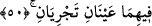
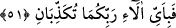
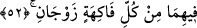

49. Öyleyse Rabbinizin hangi nimetlerini yalanlayabilirsiniz?
Bunlarda yalanlamayı kabul edecek bir şey yoktur.
50. İkisinde de akıp giden iki kaynak vardır.
İki cennet için diğer bir sıfattır (tanıtım). Bu sıfatla önceki sıfat arası “Rabbinizin
nimetlerinden hangisini yalanlayabilirsiniz?” anlamındaki âyet-i kerîme ile ayrılmıştır.
Halbuki azab kabilinden olan sıfatlar arası, bu âyetle ayrılmamıştır. Mesela, “Üzerinize
ateşten alev ve duman gönderilir…” (er-Rahmân, 55/35) âyetinde “dumansız alev/
şuvaz” ile “duman” demek olan “nühas”ın gönderilmesi ayrı şeyler olduğu halde bu iki
sıfat arasını başka bir cümle ayırmamıştır.
Âyet-i kerîme’nin mânâsı; iki cennetin her birinde bozulmayan sudan birer kaynak
vardır, demektir. Cennet nehirlerinin tasvirinden anlaşıldığına göre iki cennetteki
bozulmamış bu su kaynakları sâhibinin dilediği şekilde, yükseklerde veya vâdilerde
akarlar. Miskten olan bir dağdan aktıkları da söylenmiştir.
İbn Abbâs ve Hasan Basrî (r.a.)’den nakledildiğine göre, cennetteki bu iki kaynak,
tatlı ve dupduru su ile akarlar; birinin adı “Tesnîm”, diğerininki de “Selsebîl”dir.
Ebû Bekir el-Verrâk demiştir ki; cennetteki bu iki kaynak, dünyada Allah
korkusundan gözyaşı akıtanlar için akar durur.
51. Öyleyken Rabbinizin hangi nimetlerini yalanlayabilirsiniz?
Bu âyet-i kerîme’de, fenâ cennetinde bir kaynak vardır ki, içinde hayat suyu akar. İşte
bu, fenâdan sonra bakâdır. Bakâ cennetinde de ilim, mârifet ve hikmet suyunun aktığı bir
kaynak vardır. Fenâdan sonra bakâ, hikmetlerin ve mârifetlerin çeşitlerini, ayrı ayrı
cennet nimetlerini ve sofralarını gerektirir. et-Te’vilâtü’n-Necmiyye’de de belirtildiği
gibi, Ey sekr ve gaybet ashâbı ve ey sahv ve huzur erbâbı! Rabbinizin nimetlerinden
hangilerini yalanlayabilirsiniz?